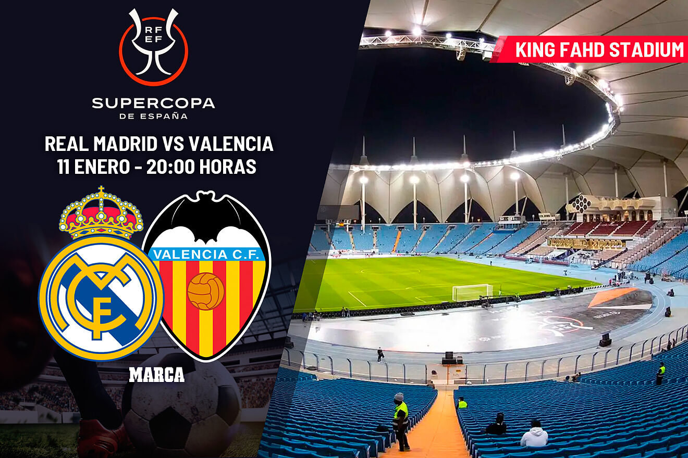
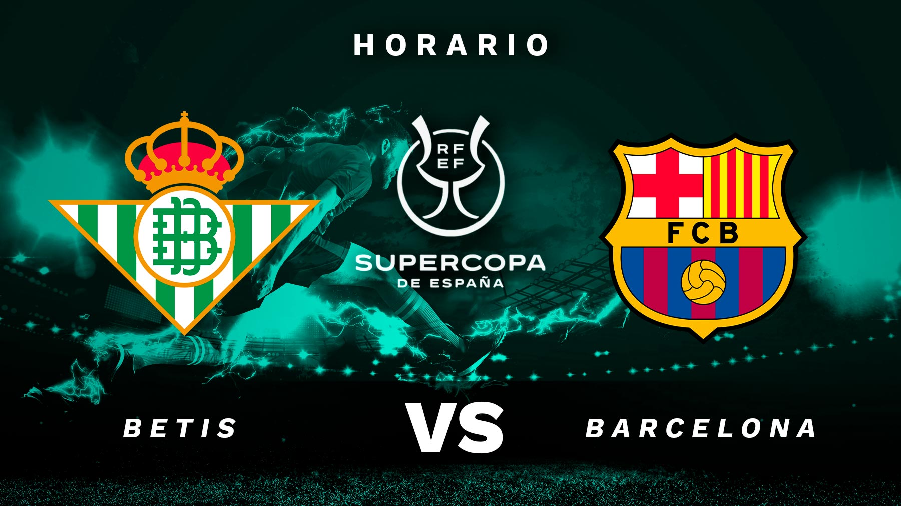
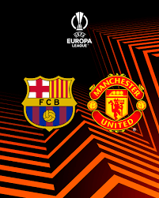
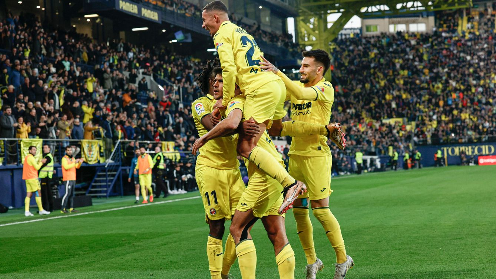

Supercopa de España: Real Madrid - Valencia
Real Madrid y Valencia se citan en el primer partido de la Supercopa de España 2023. El escenario, el estadio King Fahd de Riad, en Arabia Saudí. Los blancos jugarán como locales, ya que ganaron la competición doméstica la temporada pasada. Los de Gennaro Gattuso llegan a Arabia en un momento delicado. Tras perder por 0-1 ante el Cádiz en Mestalla, los valencianos buscarán reivindicarse ante el vigente campeón de Liga y Champions. Por otro lado, el Real Madrid también viene de perder en Liga contra el Villarreal por 2 goles a 1, los de Ancelotti intentarán meterse de nuevo en la final tras proclamarse campeones de la Supercopa de España 2022. El ganador del partido entre Real Madrid y Valencia accederá a la Final del próximo 15 de enero. Se medirá al ganador del enfrentamiento entre FC Barcelona y Real Betis. Una semana que promete emociones fuertes y que acabará coronando al nuevo supercampeón de España.
Supercopa de España: Real Betis - FC Barcelona
La pasada temporada, histórica para el Real Betis con la conquista de la Copa del Rey, se ganó el equipo verdiblanco el derecho de participar en la Supercopa de España, que se disputa desde este miércoles en Arabia Saudí y le abre la ilusionante posibilidad de levantar otro título, un nuevo hito para sus vitrinas al alcance de dos partidos. En las semifinales se medirán los verdiblancos este jueves al FC Barcelona, líder de LaLiga Santander, con el que aún no se han enfrentado los hombres de Manuel Pellegrini en el presente ejercicio.
Europa League: FC Barcelona - Manchester United
Bombazo. El FC Barcelona se las verá con el Manchester United con una plaza para los octavos de final de la Europa League en juego con la ida el jueves 16 de febrero en el Camp Nou y la vuelta, una semana después, el jueves 23 en Old Trafford. El morbo está asegurado entre dos excampeones de Europa.
Pinchazo del Madrid ante el Villarreal
La victoria del Villarreal CF ante el Real Madrid deja un bagaje negativo para el equipo castellonense de cara a la próxima jornada, ya que el técnico Quique Setién no podrá contar con tres de sus jugadores más habituales. Son baja para el partido en Balaídos frente al Celta de Vigo del próximo viernes Raúl Albiol, Álex Baena y Alfonso Pedraza, los dos primeros para cumplir ciclo de sanción tras ver la quinta tarjeta amarilla ante el Real Madrid y el tercero, por lesión.
